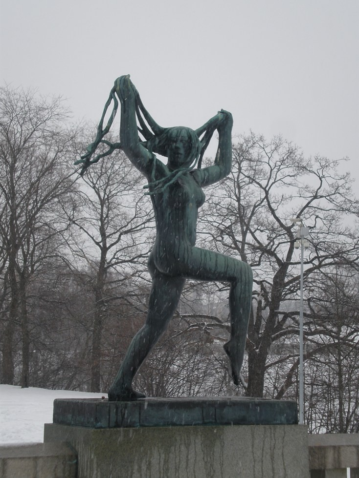
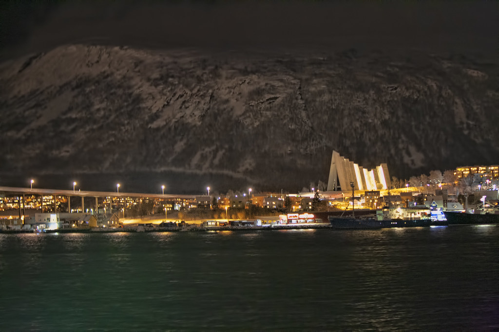
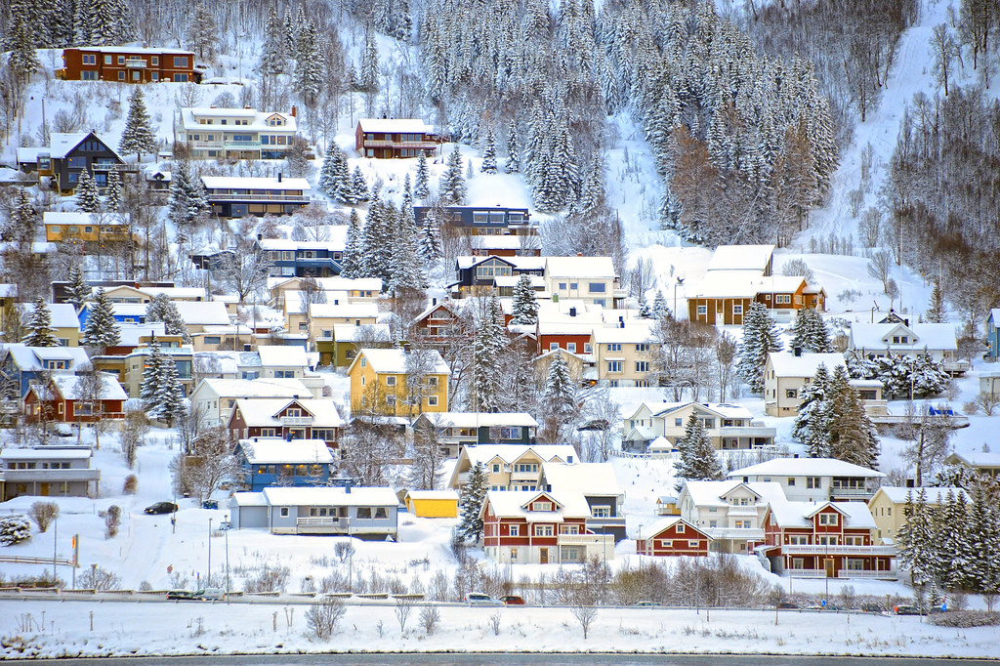
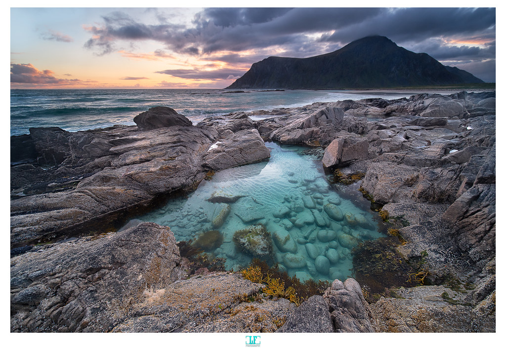
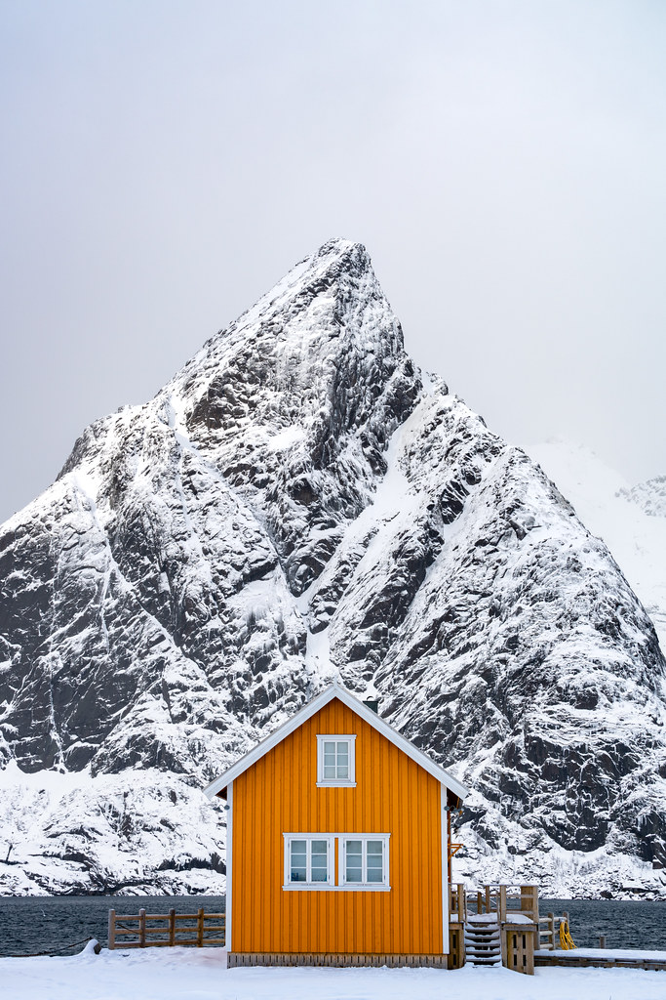
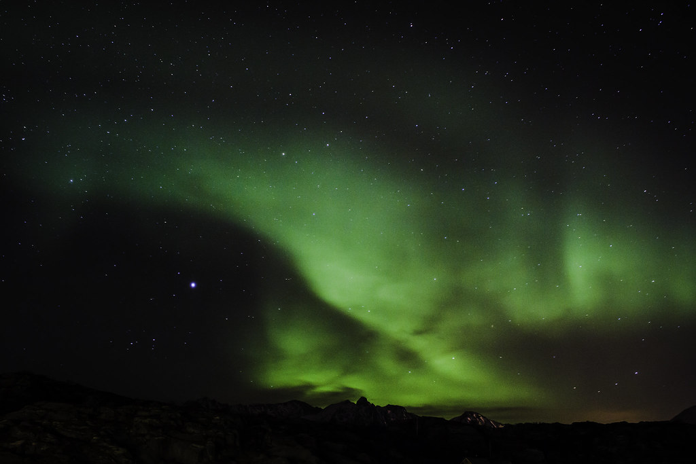

你的機票(已訂)+ 北京轉機


| 航段 | 航班 | 日期 | 時刻(以海航官網最終確認) |
|---|---|---|---|
| 台北 TPE → 北京 PEK | HU7988 | 2/26 五 | 13:10 → 16:35(約 3h25m) |
| 北京 PEK → 奧斯陸 OSL | HU769 | 2/27 六 | 02:55 → 06:00 抵 OSL(北京 T2,約 9h) ↑ 北京過夜候機約 10 小時 |
| 奧斯陸 OSL → 北京 PEK | HU770 | 3/13 六→14 日 | 12:30 → 翌日 04:30 抵北京(紅眼,約 9.5h) |
| 北京 PEK → 台北 TPE | HU7987 | 3/14 日 | 08:00 → 11:10 抵台北(約 3h10m;北京轉機約 3.5h) |
台南 → 桃園機場(當天早上北上)
- HU7988 為 13:10 起飛(下午)→ 2/26 當天早上北上完全來得及。 台南站(歸仁)→ 桃園站約 1.5 小時 → 6 號出口到 A18 → 機場捷運到 T1(約 16–19 分)/ T2(約 12–16 分)。
- 建議搭約 07:00–07:30 的高鐵北上 → 約 10:00 前抵桃機(13:10 起飛、國際線提前 3 小時報到),預留高鐵誤點緩衝;比「剛好趕上」再早一班車最穩。
- 行李直掛奧斯陸 ── 北上途中只需顧好登機箱+護照+台胞證,落地 OSL 才提領大行李,輕鬆許多。
- 回程很從容:3/14 上午 11:10 抵桃園 → 機捷 → 高鐵回台南,白天就到家,不必擔心末班車。
全程逐日(每天附 A/B/C 方案)
奧斯陸 2 + Tromsø 4(極光保底)+ Bodø 1 + Lofoten 6 + 奧斯陸 1。方案僅供選擇,不替你們拍板。
只有當你們把「回程零風險」擺第一、或更想以「在 Tromsø 追到極光」當高潮收尾、不在乎在小屋收尾時,才考慮翻成先 Lofoten。

🏛 奧斯陸抵達(2/27–2/28,2 晚)🌌 Tromsø 追極光(3/1–3/4,4 晚) 🎣 西 Lofoten 四村住(3/6–3/11,6 晚)
🎣 西 Lofoten 四村住(3/6–3/11,6 晚)Tromsø 在地 5 日・定案逐日(3/1–3/5)
依實際訂房定案:Day1 市區東北 → Day2 Sommarøy 漁村 → Day3–4 市中心。租電動車、機場取還;對齊 3 月初的「藍調」與短白天。郊區晚餐自炊。
🏡 住宿(含實際價格・2 人合計)
| 日期 | 住宿 | 價格(2 人) |
|---|---|---|
| 3/1 | Ullstindvegen 157(市區東北)📍 | NT$2,154 |
| 3/2 | Prestvikvegen(Sommarøy)📍 | NT$4,895 |
| 3/3–3/4 | Fiskergata 6(市中心,2 晚)📍 | NT$7,128 |
| 合計 | 4 晚 | NT$14,177 |
平均約 NT$3,544/晚(2 人);東北那晚最便宜、市中心 2 晚最高。
🔑 入住時間:D3–4 Fiskergata 6 為 15:00(已早寄行李處理);D1 東北小屋、D2 Sommarøy 多屬 Airbnb/民宿自助取鑰,時段向房東確認(D1 約 18:45 晚到 OK、D2 週二 Prestvika 咖啡店 12–16 有人交接)。早到一律先寄行李。
🌅 光線時間表(對齊藍調與極光)
| 日期 | 日出 | 日落 | 傍晚藍調(最美) |
|---|---|---|---|
| 3/1 一 | 07:12 | 16:42 | 16:42–17:43 |
| 3/2 二 | 07:07 | 16:46 | 16:46–17:47 |
| 3/3 三 | 07:02 | 16:51 | 16:51–17:51 |
| 3/4 四 | 06:58 | 16:55 | 16:55–17:55 |
| 3/5 五 | 06:53 | 16:59 | —(離開日) |
天文黑夜約 19:40 起(看極光);時刻為查證概值,行前再以 timeanddate.com 核對 2027 實際日期。

🚡 Day 1(3/1 一)抵達半日・纜車藍調| 時間 | 行程 |
|---|---|
| 12:00 | SAS 落地 TOS📍,機場取電動車(抓 ~1h:提行李、確認釘胎、拍車況、看電量) |
| 13:00–14:00 | 市區午餐(依預算):💰省錢 Risø Mat & Kaffebar📍(三明治・湯・咖啡,café 價位)或超市/麵包店熟食 / 🍽坐下吃正餐 Bardus Bistro📍(北歐在地・馴鹿堡/帝王蟹,~200–300 NOK・先訂位)。⚠ 想吃的 Raketten 鹿肉熱狗「週一/日公休」 → 改到 Day3 在市區吃 |
| 14:15–14:45 | 過橋開往北極大教堂📍,拍三角形外觀(內部冬季 14:00 才開、NOK 90,可略) |
| 15:00–16:50 | Fjellheisen 纜車上山卡藍調📍(來回 NOK 495)— 跨日落 16:42 + 市區夜景。當天唯一硬時間窗 |
| 17:15–17:40 | (可選)市區海港藍調散步,或早點回住處自炊休息(隔天 Sommarøy 行程較長) |
| 18:00–18:45 | 過 Tromsø 大橋到 mainland,Coop Extra Tromsdalen 採買晚餐食材(Solstrandvegen 23)📍(週一–六 07:00–23:00) |
| 18:45 起 | 往東北回 Ullstindvegen 157 住處📍(座標 69.7743, 19.2595,約 20–25 分)自炊;晴天屋外守第一晚極光 |
🛣 Day 2(3/2 二)景觀公路 → Sommarøy 漁村藍調| 時間 | 行程 |
|---|---|
| ~08:00 | 住處自理早餐 + 泡咖啡,整裝出發 |
| 09:00 | 由東北住處出發,穿過 Tromsø 市區上 Kvaløya(約 40 分),先到 Eide Handel📍 補今晚 Sommarøy 食材(島上補不到,務必先買齊) |
| 10:15–11:45 | 繞進 Ersfjordbotn📍 — Kvaløya 最經典峽灣雪山 + 咖啡店(支線往北、原路折返) |
| 12:00–13:00 | 午餐:Bryggejentene📍(Kvaløya・你們選定) |
| 13:15–14:30 | 續往西南,停 Kattfjordeidet 山口📍、Brensholmen 海灘📍(往 Senja 渡輪口、有沙灘海景) |
| 14:30–15:00 | 過 Sommarøy 跨海橋📍取景 → 放行李到 Prestvikvegen 住處📍 |
| 16:30–17:50 | Sommarøy 漁村拍藍調(依〈攝影機位〉順序:①跨海橋📍先拍藍調 → ②白沙灘📍 → ③紅漁屋燈火 Arctic Hotel📍);天文夜 19:40 起可同場守極光 |
| 18:00 起 | 回 Prestvikvegen 住處📍自炊晚餐 |
🚗 Day 3(3/3 三)開回市區還車 → 極光追雲團| 時間 | 行程 |
|---|---|
| ~08:00 | Sommarøy 住處自理早餐 + 泡咖啡,退房整裝 |
| 08:30–10:15 | Sommarøy📍 → Tromsøya 自駕(冬季抓 1.5–2h,可能遇車隊管制,早出發、查 175.no 路況) |
| 10:15–10:45 | 先開到 Fiskergata 6 寄放行李📍(行李先放飯店、逛街免拖;15:00 才正式入住) |
| 10:45–11:30 | (可選)順遊 Telegrafbukta📍 雪景海岸 → 把電充飽(依還車電量政策) |
| 11:30–12:15 | 機場還車📍(比目標早 30–45 分到、清雪拍車況存證) |
| 12:15–12:45 | 搭 Flybussen / 計程車回市中心(已無行李、輕裝) |
| 12:45–15:00 | 市中心午餐 + 逛 Storgata 主街:在地必吃 Raketten 鹿肉熱狗📍(Stortorget 廣場・1911 老攤、文化遺產・週二–六 11:00–17:00・~70–100 NOK)(購物可與 Day4 分流) |
| 15:00–17:00 | 正式入住、休息、晚餐、著裝保暖 |
| 17:00–深夜 | 極光追雲團(小巴・含飯店接送)— 嚮導機動追晴空,命中率最高;約 NOK 1350 起 |
🐕 Day 4(3/4 四)狗拉雪橇 → 市區購物| 時間 | 行程 |
|---|---|
| 09:45–13:45 | 狗拉雪橇半日團(Polar Adventures Self-Drive・含接送・自己駕,約 NOK 2,040;集合在碼頭、離住處步行可達)📍 |
| 14:00–14:40 | 全世界最北的麥當勞(Storgata 70)📍打卡、收集限定紙袋 |
| 14:40–15:20 | 禮品店買明信片 / 貼紙 / 磁鐵(Tromsø Gift & Souvenir, Strandgata 36;可辦退稅)📍 ── 全程明信片/貼紙主力日(正常營業+退稅,一次買足;避免 3/7 週日 Henningsvær 店關落空) |
| 15:20–16:00 | Domkirke 木造教堂外觀📍 → Polaria 水族館📍(冬季 16:00 關,要趕早入場) |
| 16:00 後 | 碼頭散步、拍海港藍調(約 16:55–17:55) |
| 傍晚/晚上 | 晚餐;若前三晚都沒極光,今晚是最後機會再報一次含接送極光團(隔天早起,別玩太累) |

🛫 Day 5(3/5 五)離開日| 時間 | 行程 |
|---|---|
| 08:30–09:00 | Fiskergata 6 退房(中午 12:00 前皆可,提早退) |
| 09:00–09:20 | 搭 Flybussen / 計程車到 TOS 機場📍(沒車,先確認班次或預約計程車、留雪天緩衝) |
| 09:50 | 抵 TOS,辦登機 / 掛行李(國內線小機場,作業快) |
| 11:40 | TOS → Bodø 起飛,Tromsø 段結束,接續 Lofoten 行程 |
📸 Sommarøy 藍調機位 & 住處看極光
你們住:Prestvika Strandkafé og Gjestgiveri(Prestvikvegen 2)── 蓋在 Prestvika 海灣沙灘邊、面海第一排📍 地圖
三個拍攝點(都在島上、彼此車程幾分鐘)
- ① Sommarøybrua 跨海橋停車場 ★招牌:雪山 + 白沙 + 藍綠海 + 紅木屋 + 橋📍
- ② Sommarøy 主白沙灘(Store Sommarøya 村心):用沙洲/海岸線當前景拍藍調與雪山倒影📍
- ③ 紅漁屋燈火:港邊 Arctic Hotel rorbuer,冷藍天空配暖色屋燈最對比📍
順序:日落 16:46 後先到①拍藍調(最美約 16:46–17:47)→ 走到②沙灘 → 最後拍③亮燈紅屋。
🍳 郊區自炊菜單 & 採買清單(Day1 市區東北・Day2 Sommarøy)
兩晚都在小屋自炊:Day1 在 Tromsdalen/市區超市先買、Day2 在 Kvaløysletta(Coop Extra / Eide Handel)買 Sommarøy 食材;挪威物價高,自炊最省、又能吃到當地食材。
🥣 早餐建議(住處自理・10–15 分搞定)
- 最快:麵包 / 脆麵包 knekkebrød + 挪威棕起司 brunost(刨片必試) + 果醬 + 水煮蛋或炒蛋 + 優格加莓果。
- 想吃熱的(冷天最暖、最省):燕麥粥 havregrøt 加莓果 / 肉桂,一鍋搞定。
- 加分:煙燻鮭魚 røkelaks 夾麵包(配黃瓜片);現煮咖啡或茶(帶掛耳濾掛或用小屋咖啡機)。
- 順手帶上車:用保溫瓶裝熱可可 / 茶,Day2、Day3 路上與守極光時喝。
🍽 晚餐建議
- Day1(抵達日・求快):香煎挪威鮭魚(laks)+ 水煮馬鈴薯/蔬菜 + 麵包;或盒裝魚湯(fiskesuppe)加熱配麵包,10 分鐘搞定,剛落地最省力。
- Day2(Sommarøy 漁村):3 月正逢冬季鱈魚 skrei 季 → 鱈魚海鮮湯;或馴鹿肉片(finnbiff)奶油燉配馬鈴薯泥。海景小屋配熱湯,蜜月感滿分。
🛒 採買清單(對照超市好拿)
- 蛋白質:鮭魚 laks / 當季鱈魚 skrei / 馴鹿肉片 finnbiff / 雞蛋 / 培根
- 主食:馬鈴薯、義大利麵、麵包(配挪威棕起司 brunost 必試)
- 快煮湯底:盒裝魚湯 fiskesuppe、蔬菜湯包(冷天神器)
- 蔬菜:紅蘿蔔、洋蔥、青花菜、菠菜
- 早餐:麵包、brunost、優格、雞蛋、咖啡/茶
- 🌌 追極光宵夜:熱可可粉、即溶熱茶(裝保溫瓶帶出門)、餅乾、能量棒
- 調味:鹽、胡椒、奶油、油(小屋不一定有,先確認)
每日里程 & 冬季續航
| 天 | 路線 | 里程 |
|---|---|---|
| Day1 | 機場→大教堂→纜車→市中心→超市→東北住處 | ~40–45 km |
| Day2 | 東北住處→穿市區上 Kvaløya→Ersfjordbotn→Brensholmen→Sommarøy | ~110–130 km |
| Day3 | Sommarøy→Telegrafbukta→機場還車 | ~60 km |
冬季實際續航(3 月初 −7~−11°C,掉電約 20–35%)
- Kia Niro EV(64.8 kWh)≈ 290–320 km
- VW ID.3 Pro(58 kWh)≈ 260–290 km
- VW ID.3 Pure(45 kWh,小電池)≈ 210–240 km → 建議中途充一次
→ 中/大電池取車充 ~90% 多半整趟夠用、回機場剩 1–2 成;小電池建議中途在 Kvaløysletta 充一次較保險。
充電點(沿線很夠)
省電 / 安全
- 取車要求充到 ≥85–90%;預熱(precondition)趁插電做
- 多用座椅加熱、少開大暖氣;久停拍極光別一直開暖氣
- ID.3 是後驅,冰面易打滑 → 務必釘胎;強風橋面注意側風
- 停車盡量插電過夜(普通插座慢充 8–12h 也補 ~80–120 km)
| 項目 | 重點 | 時機 |
|---|---|---|
| 🚗 租電動車 | 機場取 + 機場還、含釘胎/4WD、確認充電/還車政策 | 越早越好 |
| 🐕 狗拉雪橇 | Polar Adventures「Self-Drive + incl. transport」,指定 3/4 上午梯次 | 提前 1–2 個月 |
| 🌌 極光團 | 小巴追雲團 + 含接送 + 免費取消(3/3 晚);先選好業者 | 提前 1–2 天訂 |
| 🚡 Fjellheisen | 旺日先網購來回票(NOK 495);行前確認整建/營運 | 行前一個月 |
| 🛒 食材 | Day1 在 Tromsdalen/市區超市、Day2 在 Kvaløysletta(Eide Handel)先買齊(Sommarøy 補不到) | 當天 |
📍 Tromsø 在地地圖速查(點即開 Google Maps)
景點・活動・補給
住宿 & 取/還車
🅿 停車・⚡ 充電・🎟 購票速查(Tromsø)
🅿 停車 & ⚡ 充電
| 地點 | 停車 | 充電 | 建議 |
|---|---|---|---|
| 機場 TOS(取/還車) | 戶外+室內停車場 | Mer P3 快充 | 取車前可先充飽 |
| 北極大教堂 | 教堂旁小停車場(有限) | 無 | 停車快、拍完即走 |
| Fjellheisen 纜車 | 山腳停車場(付費) | 無(就近 Obs Jekta 有快充) | 要充改去 Obs Jekta |
| 市中心(熱狗/麥當勞/禮品/Polaria) | 路邊+地下停車場(付費) | 部分停車場有充電 | 停一處走路逛完、可邊停邊充 |
| Coop Tromsdalen / Kvaløysletta | 店家停車場(免費) | YX Kvaløysletta 快充 | Day2 上島前順充 |
| Ersfjordbotn / Brensholmen / Telegrafbukta | 景點小/中停車場(多免費) | 無 | 淡季寬鬆 |
| Sommarøy(橋/村/住處) | 橋邊+村內停車 | Arctic Hotel Type2;住處插座 | 住處慢充過夜最省 |
🎟 購票方式
- 線上先買:🌌 極光追雲團(含接送・免費取消・1–2 天前)、🐕 狗拉雪橇(提前 1–2 個月、旺季秒殺)、🚡 Fjellheisen 來回票(旺日省排隊,NOK 495)
- 現場買即可:北極大教堂(NOK 90、冬季 14:00 開)、Polaria 水族館(16:00 關,趁早)、Raketten 鹿肉熱狗
停車多以車牌辨識 App(EasyPark 等)+ 信用卡付費,行前裝好 App;價格為查證概值,行前再確認。
西 Lofoten 在地 6 日・定案逐日(3/6–3/12)
三段住宿:Ramberg(已訂)→ Reine cabin(已訂)→ Ballstad(收尾近機場)、全程自走低風險健行、深度攝影 + 多拍漁村藍調、自炊。
🏡 住宿(含實際價格・2 人合計)
| 日期 | 住宿 | 價格(2 人) |
|---|---|---|
| 3/6–3/7 | Mørkveden(Ramberg/Flakstadøya 南側)✅ 已訂📍 | NT$10,611 |
| 3/8–3/10 | Reine cabin(46 Kirkeveien)✅ 已訂📍 | NT$27,661 |
| 3/11 | Ballstad(Hattvika Lodge 推薦・近 LKN)📍 | 待訂 |
| 已訂合計 | 2 段・5 晚 | NT$38,272 |
只搬 2 次;Hamnøy 紅屋、Sakrisøy 黃屋離 Reine 2–5 分,改為拍照點(不住)。
🔑 入住時間:Reine cabin 16:00–21:00 lockbox 自助(行程 16:00 抵剛好);⚠ Mørkveden(hytte)約 15:00–16:00 才 check-in,但行程 13:30 就到 → 先放行李/逛 Skagsanden、向房東確認自助取鑰;⚠ Ballstad・Hattvika Lodge check-in 16:00、退房 11:00 → 11:00 到先寄行李,Ballstadheia 登山後 16:00 後正式入住。
🌅 光線時間表(約 68°N・概值)
| 日期 | 日出 | 日落 | 傍晚藍調(最美) |
|---|---|---|---|
| 3/6 六 | ~07:06 | ~17:30 | ~17:30–18:26 |
| 3/7 日 | ~07:00 | ~17:34 | 接日落後 30–60 分 |
| 3/8 一 | ~06:54 | ~17:38 | 同上 |
| 3/9 二 | ~06:48 | ~17:42 | 同上 |
| 3/10 三 | ~06:42 | ~17:46 | 同上 |
| 3/11 四 | ~06:36 | ~17:50 | 同上 |
| 3/12 五 | ~06:30 | —(離開) | — |
日照逐日約 +8 分變長;天文夜(約 19:30 後)放晴可守極光。時刻為概值,行前以 timeanddate.com 核對 2027 實際日期。

🛬 Day 6(3/6 六)抵達・大採買・入住 Ramberg・Skagsanden 藍調| 時間 | 行程 |
|---|---|
| 11:20 | WF804 抵 LKN,機場取車(確認冬胎/四驅;備妥 microspikes、頭燈) |
| 12:00 | Leknes 大採買(週六＝週日關門前最後正常採買)📍:① 先衝 Vinmonopolet 買酒(週六約 15:00–16:00 提早關、週日全休,全程想喝的一次買齊)→ ② Coop Extra / Rema 1000 食材買足 3/6–3/8(含週日)份量 → ③ 順手買明信片/磁鐵;🅿 停車免費、⚡REMA1000 180kW 快充(全島過路主充) |
| 13:30 | 往 Flakstadøya(過 Napp 隧道),抵 Mørkveden(Flakstadveien 651,Flakstadøya 南側)✅ 已訂(約 30–35 分)📍 放行李(hytte check-in 多 15:00–16:00,向房東確認自助取鑰;🅿私人停車、⚡Ramberg 6kW 慢充→插電過夜) |
| 16:50 | Skagsanden 沙灘藍調📍(往北約 12–15 分;濕沙鏡面倒影 + 雪峰,著名極光灘;🅿車牌 App 付費) |
| 18:40 | 回小屋📍自炊;晴天就在 Skagsanden📍 / 門口守極光 |

🏘 Day 7(3/7 日)Henningsvær 一日:招牌足球場 + 藝術漁村藍調| 時間 | 行程 |
|---|---|
| 08:00 | 由 Ramberg 出發往東到 Henningsvær📍(單程約 2 小時;天亮後行車) |
| 10:00 | Henningsvær 海上足球場(Henningsvær Stadion)📍 + 藝術漁村、畫廊/設計店(Engelskmannsbrygga、KaviarFactory 一帶);🅿村內極窄→停村外走路、付費;無充電(充電在 Leknes/Svolvær) |
| 12:30 | 咖啡/午餐(行前查 IG 確認當天有店開)、港邊彩色木屋街拍;⚠ 週日商店/畫廊多關門 → 明信片/貼紙改 3/4 Tromsø 或 3/6 Leknes 買齊,勿指望此日採購 |
| 16:50 | Henningsvær 漁村藍調(港邊彩色木構 + 村燈 + 峽灣冷藍) |
| 18:00 | 開回 Ramberg(約 2 小時、摸黑雪路慢行,約 20:00 到)→ 自炊 |
🏖 Day 8(3/8 一)Ramberg → Haukland↔Uttakleiv → 入住 Reine(已訂)| 時間 | 行程 |
|---|---|
| 09:00 | 由 Ramberg 退房出發(行李帶著) |
| 09:40 | Haukland ↔ Uttakleiv 海灘平路長走 4–5h📍(離 Ramberg 約 30 分;免登頂、低風險;或縮短改 Nusfjord 古漁村深拍);🅿Haukland 20 NOK/時、Uttakleiv YouPark 上限 300/24h |
| 16:00 | 南下入住 Reine cabin(46 Kirkeveien)✅ 已訂(入住 16:00–21:00,鑰匙在現場 lockbox 自助)📍 |
| 16:50 | Hamnøy 橋招牌藍調📍(離 Reine 2–5 分:紅屋 + 雪峰 + 倒影)+ Sakrisøy 黃屋📍 |
| 18:30 | 自炊;晴天 Uttakleiv / 就近守極光 |
⛴ Day 9(3/9 二)彈性日・Reinefjorden 觀光船看峽灣 🚶 Day 10(3/10 三)Reine 散步慢遊 + Å/Nusfjord 深拍
🚶 Day 10(3/10 三)Reine 散步慢遊 + Å/Nusfjord 深拍 🥾 Day 11(3/11 四)換 Ballstad + Ballstadheia 登高拍漁村藍調
🥾 Day 11(3/11 四)換 Ballstad + Ballstadheia 登高拍漁村藍調| 時間 | 行程 |
|---|---|
| 09:30 | 退房,Reine → Ballstad📍(約 50 分;離 LKN 機場僅 15–20 分) |
| 11:00 | 抵 Ballstad 寄放行李、午餐、整裝(Hattvika check-in 16:00、退房 11:00;登山後再正式入住;🅿 Lodge/村內停車、⚡Hattvika 多有充電→插電過夜) |
| 13:30 | Ballstadheia 登高📍(約 270m,來回 ~4h;第一段較陡、microspikes 必備;往俯瞰漁村的觀景段,不必硬攻頂) |
| 15:30 | 高地沿邊慢走、選機位(俯瞰 Ballstad 漁村 + Buksnesfjord + Vestfjord) |
| 17:30 | 高處拍 Ballstad 漁村藍調(日落約 17:50) |
| 18:15 | 戴頭燈下山(陡段結冰慢行)→ 正式入住(16:00 後)+ 自炊;把電充飽、備好早班機 |

🛫 Day 12(3/12 五)離開日・LKN 還車飛走| 時間 | 行程 |
|---|---|
| 07:40 | 退房出發 Ballstad → LKN📍(僅約 15–20 分;前晚已充飽電,冬季黑冰慢行) |
| 07:45 | LKN 還車(檢查電量/車況、拍照存證) |
| 08:00–08:30 | 進航廈:Widerøe 報到 / 自助掛行李(行李直掛 OSL)→ 安檢(國內、無護照查驗)→ 候機 |
| 09:30 | WF892 起飛(經 BOO→OSL,行李直掛 OSL、聯程受保護) |
每日里程 & 充電安排
| 日期 | 路線 | 里程 | 充電建議 |
|---|---|---|---|
| 3/6 | LKN 取車→Leknes 採買→Ramberg | ~45 km | 取車確認電量;Leknes 大採買時順手充飽 |
| 3/7 | Ramberg ⇄ Henningsvær 來回 | ~150–170 km ⚠ | 唯一要留意:出發前充飽;經 Leknes/Svolvær 邊吃邊快充一次 |
| 3/8 | Ramberg→Reine(沿途拍點) | ~50–70 km | Leknes 過路再補一次 |
| 3/9–10 | Reine 周邊健行 / 峽灣船 | 各 ~20–40 km | 短程;住處能插電過夜最理想(Reine cabin 先問房東) |
| 3/11 | Reine→Ballstad + Ballstadheia | ~40–60 km | Leknes 過路補電;Hattvika 通常有充電 |
| 3/12 | Ballstad→LKN 還車 | ~15 km | 還車前確認電量政策(建議 >30–50%) |
→ 全程約 350–450 km / 6 天;只有 3/7 需要刻意安排一次快充,其餘靠 Leknes 過路 + 住處慢充就夠。
充電點
即時空位/價格用 PlugShare / Chargefinder App 查最準;付款多用 Bilkraft / Vipps。Å 連加油站都沒有,離 Leknes 前先充飽。
冬季省電 / 安全
- 低溫續航打 7–8 折,別讓電量低於 20%;快充冬天較慢,3/7 預留充電時間
- 插電時先預熱車內(用市電暖車不吃電池,省續航)
- 多用座椅加熱、少開大暖氣;定點守極光別一直開暖氣
- ID.3 是後驅,冰面易打滑 → 務必釘胎、慢開保持距離;住處盡量插電過夜
- Ballstadheia(約 270m,3/11 登高俯瞰 Ballstad 漁村、拍藍調;第一段陡、microspikes)
- Haukland ↔ Uttakleiv 海灘長走(平路、免登頂,4–5h)
- Offersøykammen(456m,入門展望佳;Ballstad 備選白天健行)
- 村景慢走:Å 鱈魚架、Reine 碼頭、Reinefjorden 觀景
🍽 冬季餐食 & 🦅 海鵰遊船
🍽 餐食(常縮時/季節休,先查/訂位)
Anitas Seafood(Sakrisøy)、Gammelbua / Krambua(Reine)、Brygga(Å);Gadus(Hamnøy)2026/3 查為暫停。最保險=附廚房的 rorbuer 自炊 + 在 Leknes 超市(Coop Extra/Rema 1000/Bunnpris)採買。
🦅 海鵰遊船(Svolvær 出發,3 月運行)
Trollfjord 大船+海鵰約 950–1,250 NOK(約 3h、含魚湯,平穩保暖);RIB 快艇約 1,095 NOK(約 2h,離鷹近但冷濕)。最順排在進出 Svolvær 那天(本計劃未安排,想看海鵰再加)。官網 trollfjordcruise.com / rib-lofoten.com。
🌧 雨天 / 機動備案
Lofotr 維京博物館(Borg・維京長屋,1.5–2h,下雨天最佳)、Å 室內博物館;往東順遊(僅在加海鵰遊船時)可加 Svolvær / Kabelvåg(補給、老城木教堂)。Reinebringen / Kvalvika 冬季不上(見〈健行〉)、Vesterålen 這趟跳過(賞鯨 3 月過季、極光又與 Tromsø 重複)。
| 項目 | 重點 | 時機 |
|---|---|---|
| 🚗 租車(LKN 取還) | 含釘胎/四驅、email 書面確認「studded tyres included」、確認充電/還車電量政策 | 越早越好 |
| 🛏 Ballstad 末晚住宿 | Hattvika Lodge 等面海 rorbu(3/12 早班機最順) | 2026 下半年 |
| ⛴ Reinefjorden 觀光船 | 冬季電話預訂制,抵 Lofoten 前一天打 +47 994 91 805 | 前一天 |
| 🥾 健行裝備 | microspikes/冰爪 + 頭燈 + 登山杖(Ballstadheia/Haukland) | 出發前備妥 |
📍 Lofoten 在地地圖速查(點即開 Google Maps)
冬季雪地自駕注意(Tromsø + Lofoten)
兩段都租電動車、三月雪地行車的法規、路況、每日查詢與安全重點
🛞 法規 & 配備
- 釘胎合法期 10/16–4/30(Nordland);租車冬季標配冬胎/釘胎、通常不另收 ── 訂車後務必 email 書面確認「studded tyres included」。
- 沿海融凍路滑建議用釘胎,不需 4×4(有更安心);ID.3 後驅,釘胎更重要。
- 健行另備 microspikes/冰爪 + 頭燈,車上常備。
🌨 路況 & 駕駛
- E10 / Fv862 窄、限速低;路況一天內可從乾→黑冰→積雪→雪泥快速變化。
- 橋面強風會封橋:Tromsø 的 Sandnessund 橋、Sommarøy 橋、Lofoten 的 Reine–Hamnøy 單線橋(有紅綠燈)都曾因強風關閉或結冰 ── 過橋注意側風、橋面結冰起步小心。
- 盡量白天行車、夜間定點守極光;久停拍極光別一直開暖氣(EV 耗電)。
📱 每天出發前必查
- yr.no ── 天氣 / 風 / 能見度
- 175.no ── 即時路況 / 路況攝影機
- varsom.no ── 雪崩(每日 16:00 前更新;無裝備只走 Danger Level 1)
- 停正式停車格、勿擋鏟雪車;停車費多用車牌 App(EasyPark / YouPark)。
極光攻略
看極光的關鍵
- 雲是最大敵人:核心是「去找沒雲的天空」──「KP 1 的晴空,完勝 KP 8 的滿天雲」。
- 暗夜越黑越好:挑新月前後;本行程兩地合計 8–9 晚暗夜就是為了拉高機率。
- 春分增強:3 月春分前後地磁特別活躍(Russell–McPherron 效應),「機率體質」比深冬更好。
- KP 指數:Tromsø 與 Lofoten 都在極光帶正下方,KP ≥ 2 頭頂就可能出現,不必等大爆發。
- 最佳時段:約 21:00–02:00(22:00–凌晨 2 點為巔峰)。
Tromsø:跟團 vs 自駕
- Tromsø 強烈建議跟嚮導團:嚮導會帶你「追到沒雲處」,成功率自報達 9 成;避免冬季半夜自駕追光的風險。
- Lofoten 以木屋外/海灘自己等為主(漁村光害少),視天氣再加報團。
- 通則:自駕只留白天與好天的夜晚;長途/暴雪夜交給嚮導團。
- Tromsø 腹地大、路網密,是極光勝率的「保險場」;Lofoten 狹長多雲,兩地天氣互為保險。
名點 & 海上選項
Lofoten:Skagsanden、Reine 靜水、Hamnøy 橋、Uttakleiv、Haukland。Tromsø 周邊:Kvaløya 鯨魚島、Ersfjordbotn、Sommarøy。
海上避光害:Tromsø 電動/靜音暖艙極光遊船(Brim Explorer,約 1,190–1,490 NOK),暖艙看海上極光。
App / 網站
費用(2 人合計・機票已全訂)
已訂用實際金額、待訂用預估區間;完整帳見 費用紀錄.md
✅ 已訂(實際,2 人)
| 項目 | 金額(2人) | 說明 |
|---|---|---|
| 國際機票 海航 TPE⇄OSL(經北京) | 67,198 | HU7988/769/770/7987,已出票 |
| 國內機票 5 段 | 37,442 | 3/1 OSL→TOS 10,594 · 3/5 TOS→BOO 5,884 · 3/6 BOO→LKN 4,930 · 3/12 LKN→BOO→OSL 16,034(聯程) |
| Tromsø 住宿 4 晚 | 14,177 | 3/1 市區東北 2,154 · 3/2 Sommarøy 4,895 · 3/3–4 市中心 7,128 |
| Lofoten 住宿 Ramberg 2 晚 | 10,611 | 3/6–7 Mørkveden(Flakstadveien 651) |
| Lofoten 住宿 Reine 3 晚 | 27,661 | 3/8–10 Reine cabin(46 Kirkeveien) |
| 已訂小計 | 157,089 | 機票 + Tromsø + Ramberg + Reine 住宿 |
⬜ 待訂(預估,2 人)
| 項目 | 預估(2人) | 說明 |
|---|---|---|
| 住宿(其餘 5 晚:奧斯陸3+Bodø1+Ballstad1) | 16,000–32,000 | Tromsø 4 + Ramberg 2 + Reine 3 已訂(見上);僅剩 Ballstad 1 晚 + 奧斯陸/Bodø |
| 租車(LKN 取還 6 天) | 15,000–22,000 | 電動 ID.3 約 2,500/日 或 4WD |
| 活動(極光追雲團+狗拉雪橇+Fjellheisen 纜車) | 30,000–52,000 | Tromsø 極光為主力;另含 Lofoten 交通船 |
| 餐食(14 天・自炊為主) | 25,000–40,000 | 自炊可壓低 |
| 旅遊險(取消+延誤+行李+醫療) | ~7,000 | 取代 TripFlex |
| 台胞證 ×2 / ETIAS ×2 | ~4,400 | 必辦 |
| 台灣端高鐵+機捷(來回) | ~6,000 | 2/26 早上北上、3/14 返 |
| 雜支(SIM/伴手/停車/交通船等) | 8,000–15,000 | |
| 待訂小計 | 約 111,000–178,000 | 已扣除 Tromsø + Ramberg + Reine 住宿(轉已訂) |
北極圈 3 月打包(洋蔥式分層)
🧥 保暖分層
美麗諾底層 ×2 → 刷毛/羽絨中層 → 防風防水外層 + 雪褲。「沿海溫和」只是相對深冬,請當真冬天打包(Tromsø 3 月均高約 −2°C、低約 −7°C,全年下雪最多;Lofoten 約 0°C 上下但風大路滑)。
🧤 配件
厚帽、脖圍、面罩、防風手套+薄內手套、厚羊毛襪 ×2–3、防滑雪靴+冰爪、暖暖包、保溫瓶、護唇膏、手電筒。
📷 電器/攝影
相機+腳架+備用電池(貼身保暖)、紅光頭燈(看極光)、行動電源、歐規 Type C/F 轉接頭。
🍳 自炊 / 野炊裝備
蜘蛛爐(瓦斯罐不能上飛機 → 到 Tromsø 當地買、剩罐也不能帶上機)、小方鍋、雪拉碗、筷子。小屋多附廚具,這些供野炊 / 守極光煮熱飲、或廚具不齊時備用。
☕ 手沖咖啡組:手沖濾杯、拉花杯、手磨豆器(配當地咖啡豆,晨間泡咖啡 / 守極光手沖)。
🛂 證件/行政
台胞證(5 年)、護照(離開申根當日效期 ≥3 個月且 10 年內核發,現在就檢查兩本)、ETIAS(€20、線上、效期 3 年;2027/3 落在過渡期理論可免,仍強烈建議照辦)、國際駕照+台灣駕照、旅平險、住宿/租車/機票訂單。
從現在到出發 倒數待辦
| 時間 | 待辦 |
|---|---|
| 現在 2026/5–6 | ① HR 書面確認婚假(建議登記日 2/20 六,在 2/26 出發前)② 辦台胞證(5 年) ③ 向海航確認北京過夜轉機(去程約 10h)是否需重新安檢、有無休息區/過夜旅館 |
| 2026/6–9 | ④ Lofoten 小屋一開放就搶(Eliassen/Sakrisøy 面海)⑤ 訂國內機票:BOO↔LKN 那班 39 座小飛機最優先(瓶頸,班表約 7–8 月一出就訂、別拖過 2026 年底);轉機那兩段(去 3/6、回 3/12)買成「同一張連程票、含 Bodø 轉機」(行李直掛+延誤有保護),票種 Smart 以上含 23kg、進出 Lofoten 段可選 Flex ⑥ 訂 LKN 租車(釘胎/4WD)、各段住宿(先鎖可免費取消) |
| 2026/9–11 | ⑦ 訂 OSL↔Tromsø、OSL↔Bodø(極光季最熱門、便宜位早被搶,出發前 4–6 個月鎖定;與上面國內段同一波訂完最省事) |
| 2026/12–2027/1 | ⑧ 訂 Tromsø 極光追雲團 + 狗拉雪橇(均含接送) |
| 2027/1–2 | ⑨ 查 Fjellheisen 載客、辦 ETIAS、訂奧斯陸門票 ⑩ 再確認台胞證效期、護照 |
| 出發前 1–2 週 | ⑪ 抵 Lofoten 前一天打 +47 994 91 805 訂交通船 ⑫ 旅遊險、線上報到、yr.no ⑬ 訂好 2/26 約 07:00–07:30 北上的高鐵車票 |
行前最終檢查
📚 原始細節檔(已整合進本頁,留作對照,移到「封存_舊版與細節」資料夾):西 Lofoten 深度｜每晚住宿選擇｜挪威 3 月總覽｜規劃總覽